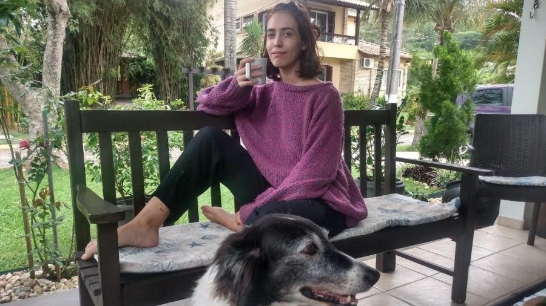

Minha avó paterna é de Caxias, no Rio Grande do Sul, e trabalhava como costureira, como renda para a família. Um dia, há uns 40 anos, quando foi comprar tecidos, encontrou dois novelos de lã, um verde com roxo e outro roxo com verde. Não sei bem por que gostou tanto deles, visto que são cores meio extravagantes. Mas decidiu tricotar dois blusões, um para meu pai e outro para meu tio, na época ainda adolescentes.
Meu pai usou o blusão por muitos anos, ele costuma dizer que a mistura de cores, o roxo com verde, é linda. Até que deixou de servir, ele tinha já uns vinte anos de uso. O pobre do blusão já estava gasto. Ele pretendia doar, mas minha mãe interceptou e pegou para ela. Acabou usando por muitos anos, eu me lembro de vê-la todos os invernos andando pela casa aquecida com o blusão.
Ano passado, quando nós estávamos nos mudando para o norte da ilha de Florianópolis, onde moramos atualmente, vi o blusão em uma das caixas, pronto para ser doado e foi minha vez de confiscá-lo. Fiquei muito apaixonada. Segundo minha avó, ele é de lã bouclé, que é um fio retorcido, o que cria uma textura meio crespinha e é um excelente isolante térmico.
Ele é tipo um moletom masculino, mas sem nenhuma modelagem específica e bem grandão. Uso para dormir quase todos os dias, gosto da sensação de aconchego que ele me dá. Mas o que mais amo mesmo é saber que foi algo que minha avó fez com muito carinho, ainda hoje dá para sentir esse carinho.
Nunca vou me esquecer da vez que minha avó veio passar uns dias aqui em casa e me viu usando ele. Ela ficou tão, mas tão feliz ao vez que dei um novo significado ao blusão, que pretendo guardá-lo por muito mais tempo. Espero poder dar para um sobrinho ou filho, para que eles saibam que uma roupa pode, sim, carregar sentimentos, e não é só uma coisa que se compra em loja e acaba descartável.